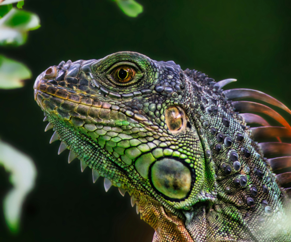
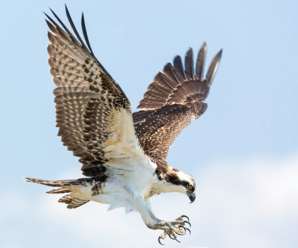
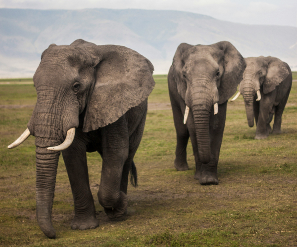

home > 전시관소개 > 기획전시
기획전시
-

- "애니멀액션"
- 근대 생태학의 아버지로 불리는 허친슨(G. Evelyn Hutchinson) 교수는 진화를 연극(Play), 생태를 극장(Theater)에 비유했습니다. 이에 ‘행동’의 의미를 더한 최재천의 문장을 모티브 하여 정해진 제목"애니멀 액션"은 ‘동물 행동’을 통해 발견할 수 있는 근원적 가치와 목적의 의미를 담고 있습니다.
-

- “행동은 진화 연극의 배우다”
- 근대 생태학의 아버지로 불리는 허친슨(G. Evelyn Hutchinson) 교수는 진화를 연극(Play), 생태를 극장(Theater)에 비유했습니다. 이에 ‘행동’의 의미를 더한 최재천의 문장을 모티브 하여 정해진 제목"애니멀 액션"은 ‘동물 행동’을 통해 발견할 수 있는 근원적 가치와 목적의 의미를 담고 있습니다.
-

- “자연에서 얻는 배움”
- 근대 생태학의 아버지로 불리는 허친슨(G. Evelyn Hutchinson) 교수는 진화를 연극(Play), 생태를 극장(Theater)에 비유했습니다. 이에 ‘행동’의 의미를 더한 최재천의 문장을 모티브 하여 정해진 제목"애니멀 액션"은 ‘동물 행동’을 통해 발견할 수 있는 근원적 가치와 목적의 의미를 담고 있습니다.